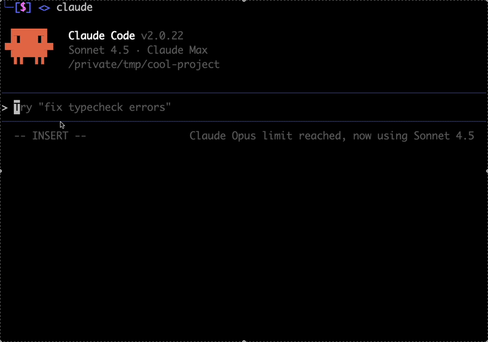

Claude Code Prompt Improver：不是改写 prompt，而是把上下文注入到触发点
它把 prompt 优化前置到 hook 层：在 prompt submit、tool use、subagent start 这些时机，按需注入澄清、路由和输出规范，让 Claude Code 更少返工、更多一次过。
01 / 一句话判断
这是一个把“提示词优化”从文本层挪到触发点层的系统：clear prompt 直接放行，vague prompt 才介入；复杂任务先选方法，再把需要的上下文补齐；长交付物先定结构，再输出内容。
它在解决什么
- 澄清：在用户还没走歪之前就问对问题。
- 路由：先决定 plan / subagent / orchestration / 直接做。
- 输出：让长 deliverable 先有结构、再有内容。
为什么不是“改写 prompt”
README 的定义是“improving the whole path from prompt to output”。它不只重写你输入的字句，而是把缺失的约束、上下文和任务判断，在正确时机自动补到 Claude 眼前。
更好的 first output，减少纠错轮次。
高召回、低打扰、误报可自取消。
README 声称 v0.4.0 约 31% token reduction。
02 / 架构总览
`scripts/engine.py` 负责事件分发，缺事件/坏事件都视为 no-op。
`scripts/rules.py` 校验规则，坏行直接跳过，不会拖垮引擎。
`scripts/nudge_builtins.py` 只允许命名 handler，不允许任意 import/eval。
03 / 7 个 nudges 怎么分工
improve
覆盖所有 prompt；只有 genuinely vague 才问 1–6 个 grounded questions，是旗舰入口。
approach-assessment
实现 / 重构 / 迁移 / multi-file 时，先选 plan、subagent、orchestration 还是直接做。
workflow
多步骤任务先规划，再按阶段路由；适合把任务拆成可执行工作流。
output-readability
长交付物先保证结论、章节和简洁度，避免大段低信噪比输出。
plan
进入 plan mode 时输出短、清、可复核的计划，文件路径锚点优先。
background-exec
长运行命令（dev server / watcher / tail）要后台执行，主线程只看关键信号。
subagent-routing
研究或规划子代理启动时，强调 breadth over depth，返回结论而不是 raw dump。
04 / 安装方式
Marketplace
最省事的安装路径，适合日常使用。
claude plugin marketplace add severity1/severity1-marketplace claude plugin install prompt-improver@severity1-marketplace
Local plugin
适合开发和调试，便于直接看源码和规则。
git clone https://github.com/severity1/claude-code-prompt-improver.git claude plugin marketplace add /path/to/.dev-marketplace/.claude-plugin/marketplace.json claude plugin install prompt-improver@local-dev
Manual
把 engine / rules / nudges 复制到 `~/.claude/hooks/prompt-improver`，再挂到 settings.json。
cp scripts/engine.py scripts/rules.py scripts/nudge_builtins.py ~/.claude/hooks/prompt-improver/scripts/ cp -r nudges ~/.claude/hooks/prompt-improver/nudges
05 / 现场预览

06 / 使用信号
Clear prompt vs vague prompt
- 清晰指令：直接执行，不额外加 skill overhead。
- 模糊指令：触发 improve，补问最少但关键的问题。
- 非平凡任务：先做 approach assessment。
- 研究/规划：子代理更偏 breadth，减少 raw dump。
实用的 bypass 机制
README 提供了三类 bypass 前缀：`*` 跳过评估、`/` 让 slash command 绕过、`#` 作为 memorize bypass。也就是说，这套系统不是强制门禁，而是默认帮助、可被显式绕过的辅助层。
bugfix、tests、refactor、migrate、多文件任务、研究型子代理。
只想要“改文案更顺”的轻量 prompt 工具用户。
它优化的是 prompt-to-output path，不是单次措辞润色。
07 / 来源与证据
- 仓库主页：https://github.com/severity1/claude-code-prompt-improver
- README 原文：https://raw.githubusercontent.com/severity1/claude-code-prompt-improver/main/README.md
- 关键信号：`hooks/`、`nudges/*.json`、`skills/prompt-improver/`、MIT license、7 个 issue、v0.4.0 的 31% token reduction 叙述。
把 prompt 优化从“文字润色”变成“事件驱动的上下文注入”。
Hook / Rule / Nudge / Skill 四层拆开，便于扩展和维护。
适合做成 Claude Code 重度用户的工作流基础设施卡。